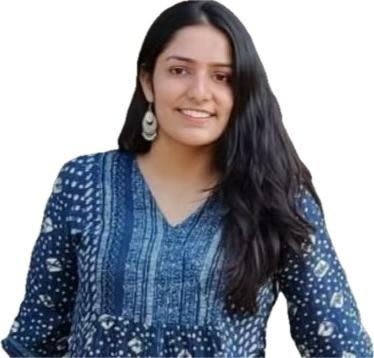

Lubhani Gaat

Summary
I am a curious and consistent learner. Always willing to learn new Tools and Technology.
Ready to face new challenges.
Education
- Indira Gandhi Delhi Technical University For Women
Bachelor of Technology - Computer Science and Engineering, GPA- 9.17
- Sidhhartha Public School
CBSE - Class XII, Percentage - 92.80%
- OP Jindal Modern School
CBSE - Class X, Percentage - 96.40%
Work Experience
- SAP Labs, India
Summer Intern
- Developed a cutting-edge full stack Single Page Application (SPA) by seamlessly integrating SAP UI5 web
components and React Flow; 40% increase in user engagement metrics
- Worked on NodeJs, Express Server for Back-end functionality, using ReactJs for front-end for 9 weeks.
- Repozitory
Summer Intern
- Worked on Real life-based Project Management Mobile App using Flutter, for 6 weeks.
- Make a profile image screen using State Management along with various flutter packages and tools.
Skills
- Languages: C++(advance),C#(beginners),Dart,React(intermediate),NodeJs
- Tools: GIT, GitHub, MySQL, Android Studio, Visual Studio, Canva, Postman
- Fundamentals: Database Management System(MySQL),Object-Oriented Programming,Operating System
- Soft Skills: Leadership, Content Writing, Public Speaking, Creative.
Achievements
- Made various Flutter development projects and obtained the certificate from Udemy.
- Completed the 2 tracks of Google Cloud Challenge.
Others